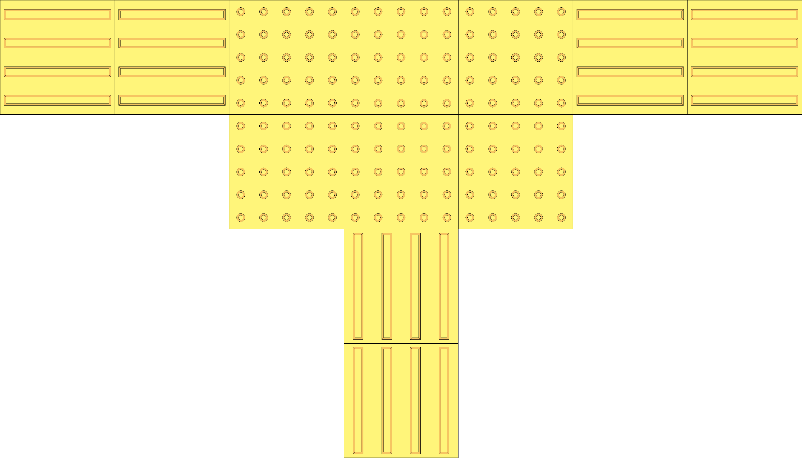
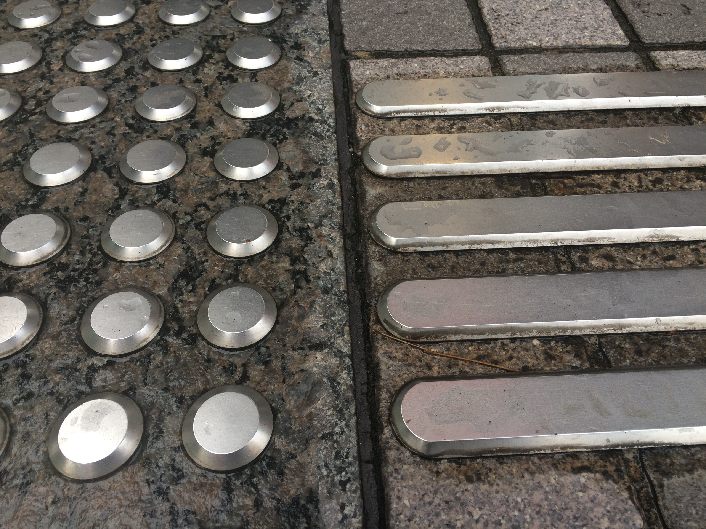
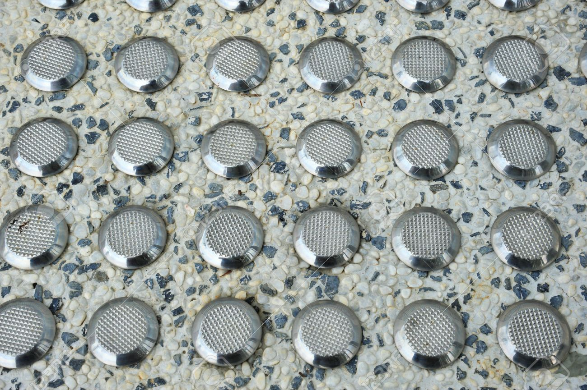

Tactile Paving
Tactile pavings are a type of floor paving designed to help people with visual disabilities
to walk safely with the help of their long canes.
They are composed of two textures: an array of dots indicate caution, spot to stop, or an intersection;
and vertical bars that suggest it is safe to walk forward.
They are also known as “truncated domes” due to their physical texture,
where their unevenness may be felt by visually disabled people using their long canes.
Following the legislation of the Rwandans with Disabilities Act,
all public buildings are required to be paved with tactile paving.
While tactile pavings are designed to help visually impaired people navigate more safely,
poor standardization has created some safety issues.
Current Issues


 In Rwanda, dot arrays are 5 by 5 is formation, while vertical bars also come in pairs of 5.
Although it may be intuitive to keep the numbers identical in both textures,
the navigation experience may be ambiguous due to lack of distinction.
In Japan, where tactile paving is invented, dot arrays are 5 by 5 while vertical bars come in pairs of 4,
improving overall safety by removing the ambiguity.
In Rwanda, dot arrays are 5 by 5 is formation, while vertical bars also come in pairs of 5.
Although it may be intuitive to keep the numbers identical in both textures,
the navigation experience may be ambiguous due to lack of distinction.
In Japan, where tactile paving is invented, dot arrays are 5 by 5 while vertical bars come in pairs of 4,
improving overall safety by removing the ambiguity.
 
In addition, there is no regulation with regards to the pavement material. This would be problematic in a rainy day when the floor is wet. As a result, we have recommended the Ministry of Transport to set the minimum static coefficient of friction of tactile pavement surfaces to 0.6. If you compare the pavings shown in the two images above, the paving on the right has a tougher surface. This would improve grip and enhance safety.